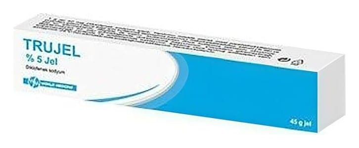

Trujel %5 Jel, 45 Gram

Ne için kullanılır
KT · Bölüm 1TRUJEL etkin madde olarak diklofenak sodyum içeren, jel formunda bir ilaçtır. TRUJEL topikal kullanılan non-streoidal antiinflamatuvar preparatları olarak adlandırılan bir ilaç grubuna dahildir. TRUJEL 45 g’lık tüpler ile kullanıma sunulmaktadır. TRUJEL, aşağıdaki hastalıkların bölgesel tedavisinde ağrı kesici ve iltihap önleyici olarak etkilidir; • Eklem kireçlenmesi ve eklem iltihaplanması gibi bölgesel romatizmal hastalıklar, • Burkulma, ezilme, incinme gibi kazalar ya da spor yaralanmalarının neden olduğu ağrı iltihaplanma ve şişmeler, • Ağrı, iltihaplanma ve kas gerginliği ile kendini gösteren kas iskelet sistemi hastalıkları